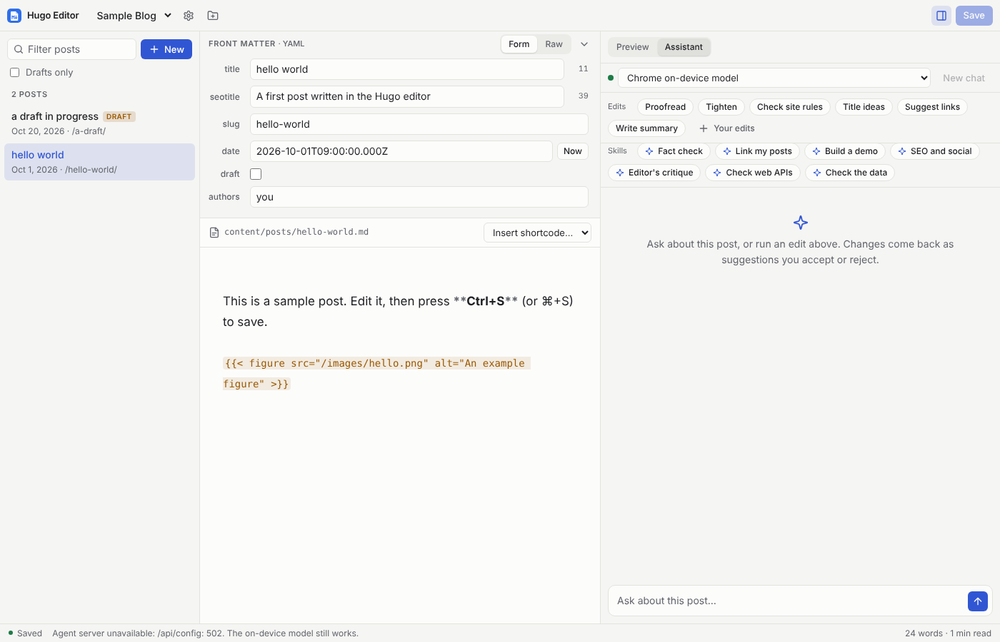
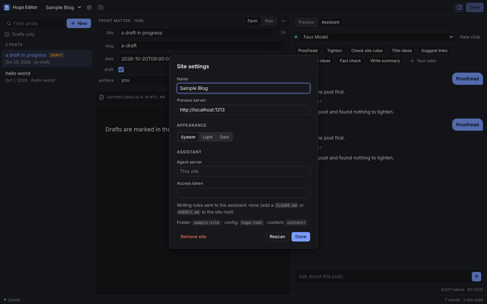
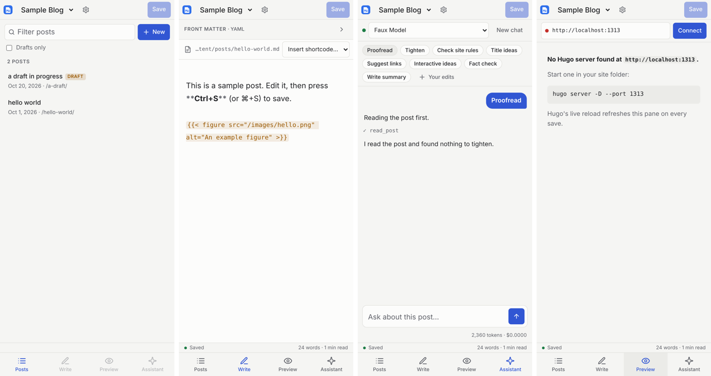

A writing tool for Hugo blogs, with assistants that suggest and never overwrite.
Hugo Editor runs in the browser and edits your site folder on disk. It previews posts with your real theme from your own hugo server, and its assistants research, fact check and propose edits you accept or reject. It was built for aifoc.us and paul.kinlan.me, and works with any Hugo site.

What it does
Everything around the text stays quiet so the post is the loudest thing on screen. The features below each have a page in the docs.
Your folder, your files
Open a Hugo site folder once and the editor remembers it. It reads your Hugo config, permalinks and shortcodes. Front matter edits change only the key you touched, so saving an unchanged post is byte-identical.
The editorLive preview with your theme
The preview pane shows the post as your local hugo server renders it, and Hugo's live reload refreshes it on every save.
Assistants for a post or the whole site
Conversations run in Pi Durable agents inside Cloudflare Durable Objects, so they survive reloads and deploys. Pick Claude, DeepSeek, OpenAI, Gemini, OpenRouter or Chrome's on-device model.
The assistantSuggestions, not rewrites
The model changes a post only by proposing find and replace edits, each shown as a word diff to accept or reject. Accepted edits go through the editor, so undo works, and nothing is written until you save.
Edits and reviewSkills and your own edits
Fact check, Link my posts, Build a demo, SEO and social, Editor's critique and more. Add your own as a SKILL.md in the site folder, install them from GitHub, or save an instruction as a one-click edit.
Tools that know your writing
Full-text search over every past post, web search and fetch, MCP servers and plain HTTP APIs. Other agents, such as Claude Code, can read your site through the editor's own MCP server.
Tools and MCPExtensions
Pi-style extensions run in their own Web Worker and can add commands, toolbar buttons, status items, underlines, panels, save hooks and agent tools. The assistant can write one for you, and you approve each install.
ExtensionsBuilt on the platform
An installable, offline PWA. Where Chrome has them it uses the Prompt and Summarizer APIs, folder watching, WebMCP, self-sizing demo iframes, view transitions and hover cards, with fallbacks elsewhere.
Chrome features

How it works
The page is static and talks to a Cloudflare Worker for everything that needs a server. Your posts never leave your disk unless an assistant reads them.
In the browser
Lit and CodeMirror 6. Site folders are opened with the File System Access API and their directory handles are kept in IndexedDB. Chrome and Edge can open real folders; other browsers get a sample site in the private file system.
On Cloudflare
A Worker serves the app and the API. Durable Objects hold one conversation per post and per site, the search index for each site, your tool settings and installed extensions.
Made to grow
A feature is a file or a folder: a skill, a quick edit, an extension, a page module, an API route or an agent backend. ACP harnesses and git publishing are next, through a small local helper.
Run it yourself
You need Node and, for the assistant, at least one model key. Without one, DEMO_MODEL=1 gives a scripted model so the whole loop works offline.
git clone https://github.com/PaulKinlan/MarkdownEdiitor
cd MarkdownEdiitor
npm install
npm run dev # the editor at http://localhost:5173
npm run dev:worker # the Worker and Durable Objects at :8787
# in your Hugo site folder, for the preview
hugo server -D --port 1313To deploy your own copy, add CLOUDFLARE_API_TOKEN and CLOUDFLARE_ACCOUNT_ID as repository secrets and push to main. Set EDITOR_TOKEN before adding model keys. Deploys and branch previews has the details.
Docs
The documentation lives with the code in docs/, so it changes in the same pull requests as the features.
- The editorFolders, front matter, images, saves, preview
- The assistantModels, skills, tools, backends, MCP
- Extension APIWriting your own extensions and hooks
- ModulesAdding a feature that runs in the page
- Chrome featuresOn-device model, WebMCP and more
- Installing it as an appOffline, updates, file handling
- Security and telemetryCSP, Permissions-Policy, reports
- DeploysCloudflare, branch previews